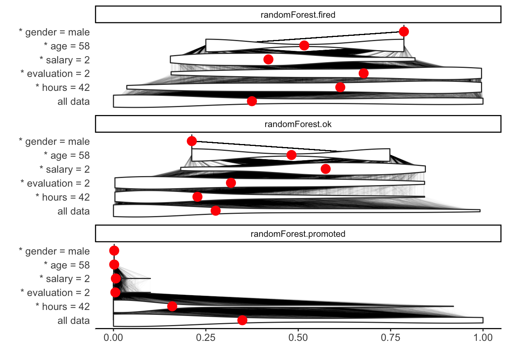
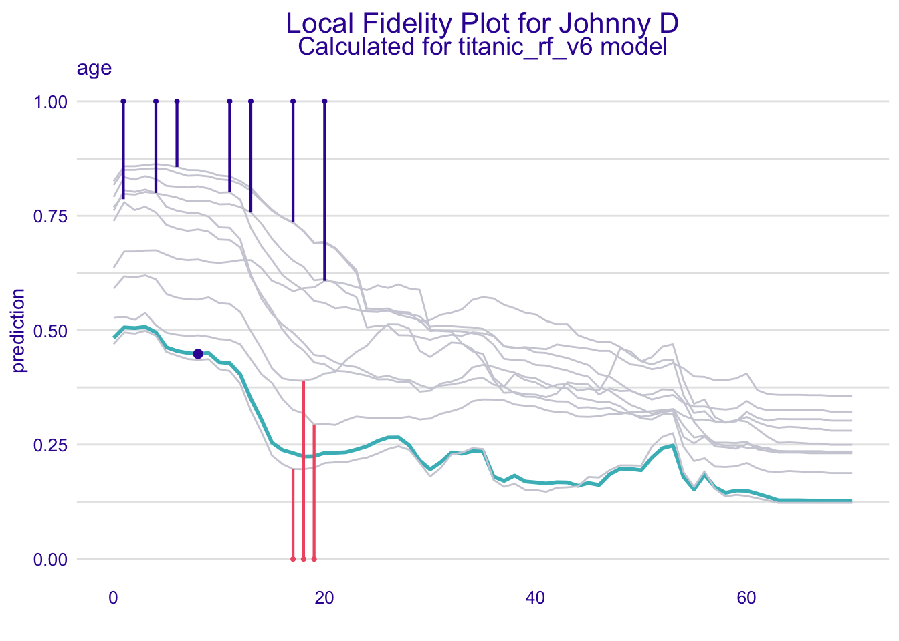
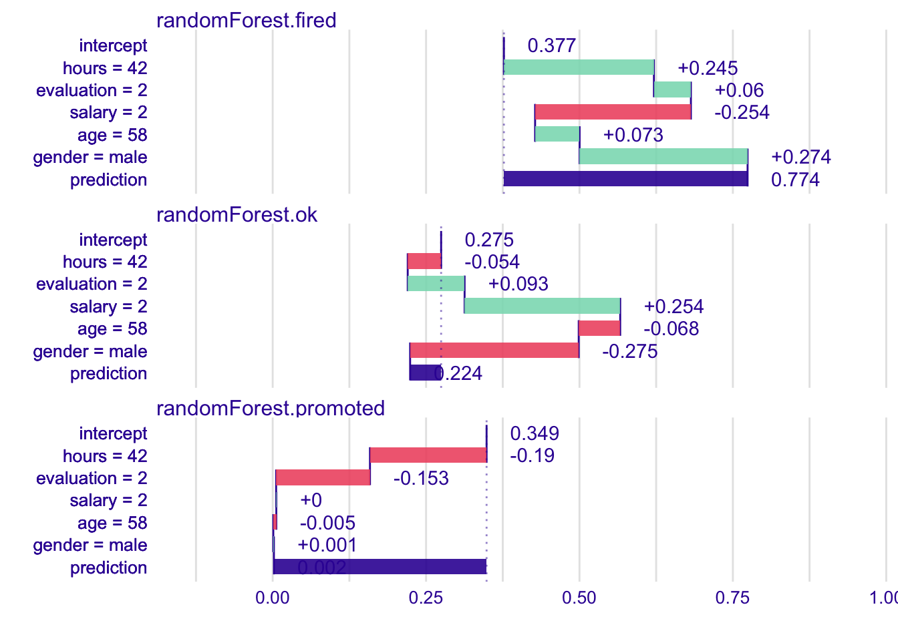

Chapter 9 Break-down Plots for Additive Variable Attributions
In Chapter 7, we introduced a method for assessment of local variable-importance based on Ceteris-paribus (CP) profiles. The main disadvantage of this method is that the sum of the developed importance scores does not equal the final model prediction.
In this chapter we introduce Break-down (BD) plots, which offer a solution to this problem.
BD plots show “variables attributions” i.e., the decomposition of the difference between the single-instance and the average model predictions among the different explanatory variables.
Note that the method is similar to the EXPLAIN algorithm introduced in (Robnik-Šikonja and Kononenko 2008) and implemented in the ExplainPrediction package (Robnik-Šikonja 2018).
9.1 Intuition
The underlying idea is to calculate contribution of an explanatory variable to model’s prediction as a shift in the expected model response after conditioning on other variables.
The idea is illustrated in Figure 9.1. Consider the prediction for johny_d for the random-forest model (see Section 4.1.3) for the Titanic data. Panel A shows distribution of model predictions. The row all data shows the distribution of the predictions for the entire dataset. The red dot indicates the average and it is an estimate of the expected model prediction \(E_X[f(X)]\) over the distribution of all explanatory variables.
To evaluate the contribution of the explanatory variables to the particular instance prediction, we consider the predictions when fixing the values of the variables. For instance, the row class=1st in Panel A of Figure 9.1 presents the distribution of the predictions obtained when the value of the class variable has been fixed to the 1st class. Again, the red dot indicates the average of the predictions. The next row (age=8) shows the distribution and the average predictions with the value of variable class set to 1st and age set to 8, and so on. The last row corresponds to the prediction for model response forjohny_d`.
The black lines in Panel A show how the inidividual predictions change after the value of the \(j\)-th variable has been replaced by the value indicated in the name of the row.
Eventually, however, we may be interested in the average predictions, as indicated in Panel B of Figure 9.1, or even only in the changes of the averages, as shown in Panel C. In Panel C, positive changes are presented with green bars, while negative differences are marked with red bar. The changes sum up to the final prediction, which is illustrated by the violet bar at the bottom of Panel C.
What can be learned from Break-down plots? In this case we have concise summary of effects of particular variables on expected model response.
First, we see that average model response is 23.5 percent. These are odds of survival averaged over all people on Titanic. Note that it is not the fraction of people that survived, but the average model response, so for different models one can get different averages.
The model prediction for Johny D is 42.2 percent. It is much higher than an average prediction. Two variables that influence this prediction the most are class (=1st) and age (=8). Setting these two variables increase average model prediction by 33.5 percent points. Values in all other variables have rather negative effect. Low fare and being a male diminish odds of survival predicted by the model. Other variables do not change model predictions that much.
Note that value of variable attribution depends on the value not only a variable itself. In this example the embarked = Southampton has small effect on average model prediction. It may be because the variable embarked is not important or it is possible that variable embarked is important but Southampton has an average effect out of all other possible values of the embarked variable.
![(fig:BDPrice4) Break-down plots show how the contribution of individual explanatory variables change the average model prediction to the prediction for a single instance (observation). Panel A) The first row shows the distribution and the average (red dot) of model predictions for all data. The next rows show the dirstribution and the average of the predictions when fixing values of subseqeunt explanatory variables. The last row shows the prediction for a particular instance of interest. B) Red dots indicate the average predictions from Panel B. C) The green and red bars indicate, resspectively, positive and negative changes in the average predictions (variable contributions).](figure/break_down_distr.png)
Figure 9.1: (fig:BDPrice4) Break-down plots show how the contribution of individual explanatory variables change the average model prediction to the prediction for a single instance (observation). Panel A) The first row shows the distribution and the average (red dot) of model predictions for all data. The next rows show the dirstribution and the average of the predictions when fixing values of subseqeunt explanatory variables. The last row shows the prediction for a particular instance of interest. B) Red dots indicate the average predictions from Panel B. C) The green and red bars indicate, resspectively, positive and negative changes in the average predictions (variable contributions).
9.2 Method
First, let’s see how variable attribution works for linear models.
9.2.1 Break-down for linear models
Assume a classical linear model for response \(Y\) with \(p\) explanatory variables collected in the vector \(X = (X_1, X_2, \ldots, X_p)\) and coefficients \(\beta = (\beta_0, \beta_1, .., \beta_p)\), where \(\beta_0\) is the intercept. The prediction for \(Y\) at point \(X=x=(x_1, x_2, \ldots, x_p)\) is given by the expected value of \(Y\) conditional on \(X=x\). For a linear model, the expected value is given by the following linear combination:
\[
E_Y(Y | x) = f(x) = \beta_0 + x_1 \beta_1 + \ldots + x_p \beta_p.
\]
We are interested in the contribution of the \(i\)-th explanatory variable to model prediction \(f(x^*)\) for a single observation described by \(x^*\). In this case, the contribution is equal to \(x^*_i\beta_i\), because the \(i\)-th variable occurs only in this term. As it will become clear in the sequel, it is easier to interpret the variable’s contribution if \(x_i\) is is centered by subtracting a constant \(\hat x_i\) (usually, the mean of \(x_i\)). This leads the following, intuitive formula for the variable attribution:
\[
v(i, x^*) = \beta_i (x_i^* - \hat x_i).
\]
We want to calculate \(v(f, x^*, i)\), which is the contribution of the \(i\)-th explanatory variable to the prediction of model \(f()\) at point \(x^*\). Assume that \(E_Y(Y | x^*) \approx f(x^*)\), where \(f(x^*)\) is the value of the model at \(x^*\). A possible approach to define \(v(f, x^*, i)\) is to measure how much the expected model response changes after conditioning on \(x_i^*\):
\[
v(i, x^*) = E_Y(Y | x^*) - E_{X_i}\{E_Y[Y | (x_1^*,\ldots,x_{i-1}^*,X_i,x_{i+1}^*,x_p^*)]\}\approx f(x^*) - E_{X_i}[f(x_{-i}^*)],
\]
where \(x_{-i}^*\) indicates that variable \(X_i\) in vector \(x_{-i}^*\) is treated as random. For the classical linear model, if the explanatory variables are independent, \(v(f, x^*, i)\) can be expressed as follows:
\[
v(i, x^*) = f(x^*) - E_{X_i}[f(x_{-i}^*)] = \beta_0 + x_1^* \beta_1 + \ldots + x_p^* \beta_p - E_{X_i}[\beta_0 + x_1^* \beta_1 + \ldots +\beta_i X_i \ldots + x_p^* \beta_p] = \beta_i[x^*_i - E_{X_i}(X_i)].
\]
In practice, given a dataset, the expected value of \(X_i\) can be estimated by the sample mean \(\bar x_i\). This leads to
\[
v(i, x^*) = \beta_i (x^*_i - \bar x_i).
\]
Note that the linear-model-based prediction may be re-expressed in the following way:
\[
f(x^*) = [\beta_0 + \bar x_1 \beta_1 + ... + \bar x_p \beta_p] + [(x_1^* - \bar x_1) \beta_1 + ... + (x_p^* - \bar x_p) \beta_p]
\]
\[
\equiv [average \ prediction] + \sum_{j=1}^p v(i, x^*).
\]
Thus, the contributions of the explanatory variables are the differences between the model prediction for \(x^*\) and the average prediction.
** NOTE for careful readers **
Obviously, sample mean \(\bar x_i\) is an estimator of the expected value \(E_{X_i}(X_i)\), calculated using a dataset. For the sake of simplicity we do not emphasize these differences in the notation. Also, we ignore the fact that, in practice, we never know the model coefficients and we work with an estimated model.
9.2.2 Break-down for general case
Again, let \(v(j, x_*)\) denote the variable-importance measure of the \(j\)-th variable and instance \(x_*\), i.e., the contribution of the \(j\)-th variable to prediction at \(x_*\).
We would like the sum of the variable-importance measures for all explanatory variables to be equal to the instance prediction (property called local accuracy), so that \[ f(x_*) = v_0 + \sum_{j=1}^p v(j, x_*), \] where \(v_0\) denotes the average model response. If we re-write the equation above as follows: \[ E_X[f(X)|X^1 = x^1_*, \ldots, X^p = x^p_*] = E_X[f(X)] + \sum_{j=1}^p v(j, x_*), \] then a natural proposal for \(v(j, x_*)\) is
\[ v(j, x_*) = E_X[f(X) | X^1 = x^1_*, \ldots, X^j = x^j_*] - E_X[f(X) | X^1 = x^1_*, \ldots, X^{j-1} = x^{j-1}_*]. \] In other words, the contribution of the \(j\)-th variable is the difference between the expected value of the prediction conditional on setting the values of the first \(j\) variables equal to their values in \(x_*\) and the expected value conditional on setting the values of the first \(j-1\) variables equal to their values in \(x_*\).
Note that the definition does imply the dependence of \(v(j, x_*)\) on the order of the explanatory variables that is reflected in their indices.
To consider more general cases, let \(J\) denote a subset of \(K\) (\(K\leq p\)) indices from \(\{1,2,\ldots,p\}\), i.e., \(J=\{j_1,j_2,\ldots,j_K\}\) where each \(j_k \in \{1,2,\ldots,p\}\). Furthermore, let \(L\) denote another subset of \(M\) (\(M \leq p-K\)) indices from \({1,2,\ldots,p}\) distinct from \(J\). That is, \(L=\{l_1,l_2,\ldots,l_M\}\) where each \(l_m \in \{1,2,\ldots,p\}\) and \(J \cap L = \emptyset\). Let us define now
\[\begin{eqnarray} \Delta^{L|J}(x_*) &\equiv& E_X[f(X) | X^{l_1} = x_*^{l_1},\ldots,X^{l_M} = x_*^{l_M},X^{j_1} = x_*^{j_1},\ldots,X^{j_K} = x_*^{j_K}]\\ &-& E_X[f(X) | X^{j_1} = x_*^{j_1},\ldots,X^{j_K} = x_*^{j_K}]. \end{eqnarray}\]
In other words, \(\Delta^{L|J}(x_*)\) is the change between the expected prediction when setting the values of the explanatory variables with indices from the set \(J \cup L\) equal to their values in \(x_*\) and the expected prediction conditional on setting the values of the explanatory variables with indices from the set \(J\) equal to their values in \(x_*\).
In particular, for the \(l\)-th explanatory variable, let \[\begin{eqnarray} \Delta^{l|J}(x_*) \equiv \Delta^{\{l\}|J}(x_*) &=& E_X[f(X) | X^{l} = x_*^{l},X^{j_1} = x_*^{j_1},\ldots,X^{j_K} = x_*^{j_K}]\\ &-& E_X[f(X) | X^{j_1} = x_*^{j_1},\ldots,X^{j_K} = x_*^{j_K}]. \end{eqnarray}\]
Thus, \(\Delta^{l|J}\) is the change between the expected prediction when setting the values of the explanatory variables with indices from the set \(J \cup \{l\}\) equal to their values in \(x_*\) and the expected prediction conditional on setting the values of the explanatory variables with indices from the set \(J\) equal to their values in \(x_*\). Note that, if \(J=\emptyset\), then \[ \Delta^{l|\emptyset}(x_*) = E_X[f(X) | X^{l} = x_*^{l}] - E_X[f(X)]. \] It follows that \[ v(j, x_*) = \Delta^{j|\{1, ..., j-1\}}(x_*). \] Unfortunately, for non-additive models (that include interactions), the value of so-defined variable-importance measure depends on the order, in which one sets the values of the explanatory variables. Figure 9.2 presents an example. We fit the random forest model to predict whether a passenger survived or not, then, we explain the model’s prediction for a 2-year old boy that travels in the second class. The model predicts survival with a probability of \(0.964\). We would like to explain this probability and understand which factors drive this prediction. Consider two explanations.
Explanation 1: The passenger is a boy, and this feature alone decreases the chances of survival. He traveled in the second class which also lower survival probability. Yet, he is very young, which makes odds higher. The reasoning behind such an explanation on this level is that most passengers in the second class are adults, therefore a kid from the second class has high chances of survival.
Explanation 2: The passenger is a boy, and this feature alone decreases survival probability. However, he is very young, therefore odds are higher than adult men. Explanation in the last step says that he traveled in the second class, which make odds of survival even more higher. The interpretation of this explanation is that most kids are from the third class and being a child in the second class should increase chances of survival.
Note that the effect of the second class is negative in explanations for scenario 1 but positive in explanations for scenario 2.
![(fig:ordering) An illustration of the order-dependence of the variable-contribution values. Two *Break-down* explanations for the same observation from Titanic data set. The underlying model is a random forest. Scenarios differ due to the order of variables in *Break-down* algorithm. Blue bar indicates the difference between the model's prediction for a particular observation and an average model prediction. Other bars show contributions of variables. Red color means a negative effect on the survival probability, while green color means a positive effect. Order of variables on the y-axis corresponds to their sequence used in *Break-down*~algorithm.](figure/ordering.png)
Figure 9.2: (fig:ordering) An illustration of the order-dependence of the variable-contribution values. Two Break-down explanations for the same observation from Titanic data set. The underlying model is a random forest. Scenarios differ due to the order of variables in Break-down algorithm. Blue bar indicates the difference between the model’s prediction for a particular observation and an average model prediction. Other bars show contributions of variables. Red color means a negative effect on the survival probability, while green color means a positive effect. Order of variables on the y-axis corresponds to their sequence used in Break-down~algorithm.
There are three approaches that can be used to address the issue of the dependence of \(v(j, x_*)\) on the order, in which one sets the values of the explanatory variables.
In the first approach, one chooses an ordering according to which the variables with the largest contributions are selected first. In this chapter, we describe a heuristic behind this approach.
In the second approach, one identifies the interactions that cause a difference in variable-importance measure for different orderings and focuses on those interactions. This approach is discussed in Chapter 10.
Finally, one can calculate an average value of the variance-importance measure across all possible orderings. This approach is presented in Chapter 11.
To choose an ordering according to which the variables with the largest contributions are selected first, one can apply a two-step procedure. In the first step, the explanatory variables are ordered. In the second step, the conditioning is applied according to the chosen order of variables.
In the first step, the ordering is chosen based on the decreasing value of the scores equal to \(|\Delta^{k|\emptyset}|\). Note that the absolute value is needed, because the variable contributions can be positive or negative. In the second step, the variable-importance measure for the \(j\)-th variable is calculated as \[ v(j, x_*) = \Delta ^{j|J}, \] where \[ J = \{k: |\Delta^{k|\emptyset}| < |\Delta^{j|\emptyset}|\}, \] that is, \(J\) is the set of indices of explanatory variables that have scores \(|\Delta^{k|\emptyset}|\) smaller than the corresponding score for variable \(j\).
The time complexity of theeach of the two steps of the procedure is \(O(p)\), where \(p\) is the number of explanatory variables.
9.3 Example: Titanic data
Let us consider the random-forest model titanic_rf_v6 (see Section 4.1.3 and passenger johny_d (see Section 4.1.5) as the instance of interest in the Titanic data.
The average of model predictions for all passengers is equal to \(v_0 = 0.2353095\). Table 9.1 presents the scores \(|\Delta^{j|\emptyset}|\) and the expected values \(E[f(X | X^j = x^j_*)]\). Note that \(\Delta^{j|\emptyset}=E[f(X) | X^j = x^j_*]-v_0\) and, since for all variables \(E[f(X) | X^j = x^j_*]>v_0\), we have got \(E[f(X | X^j = x^j_*)]=|\Delta^{j|\emptyset}|+v_0\).
| variable \(j\) | \(E[f(X) | X^j = x^j_*]\) | \(|\Delta^{j|\emptyset}|\) |
|---|---|---|
| age | 0.7407795 | 0.5051210 |
| class | 0.6561034 | 0.4204449 |
| fare | 0.6141968 | 0.3785383 |
| sibsp | 0.4786182 | 0.2429597 |
| parch | 0.4679240 | 0.2322655 |
| embarked | 0.4602620 | 0.2246035 |
| gender | 0.3459458 | 0.1102873 |
Based on the ordering defined by the scores \(|\Delta^{j|\emptyset}|\) from Table 9.1, we can compute the variable-importance measures based on the sequential contributions \(\Delta^{j|J}\). The computed values are presented in Table 9.2.
| variable \(j\) | \(E[f(X) | X^{\{1,\ldots,j\}} = x^{\{1,\ldots,j\}}_*)]\) | \(\Delta^{j|\{1,\ldots,j\}}\) |
|---|---|---|
| intercept | 0.2353095 | 0.2353095 |
| age = 8 | 0.5051210 | 0.2698115 |
| class = 1st | 0.5906969 | 0.0855759 |
| fare = 72 | 0.5443561 | -0.0463407 |
| gender = male | 0.4611518 | -0.0832043 |
| embarked = Southampton | 0.4584422 | -0.0027096 |
| sibsp = 0 | 0.4523398 | -0.0061024 |
| parch = 0 | 0.4220000 | -0.0303398 |
| prediction | 0.4220000 | 0.4220000 |
Results from Table 9.2 are presented as a waterfall plot in Figure 9.3.
Figure 9.3: (fig:BDjohnyExample) Break-down plot for the titanic_rf_v6 model and johny_d for the Titanic data.
9.4 Pros and cons
Break-down plots offer a model-agnostic approach that can be applied to any predictive model that returns a single number. The approach offers several advantages. The plots are easy to understand. They are compact; results for many variables may be presented in a small space. The approach reduces to an intuitive interpretation for the generalized-linear models. Numerical complexity of the Break-down algorithm is linear in the number of explanatory variables.
Break-down plots for non-additive models may be misleading, as they show only the additive contributions. An important issue is the choice of the ordering of the explanatory variables that is used in the calculation of the variable-importance measures. Also, for models with a large number of variables, the Break-down plot may be complex and include many variables with small contributions to the instance prediction.
9.5 Code snippets for R
In this section, we present key features of the iBreakDown R package (Gosiewska and Biecek 2019a) which is a part of the DrWhy.AI universe. The package covers all methods presented in this chapter. It is available on CRAN and GitHub. More details and examples can be found at https://modeloriented.github.io/iBreakDown/.
For illustration purposes, we use the titanic_rf_v6 random-forest model for the Titanic data developed in Section 4.1.3. Recall that it is developed to predict the probability of survival from sinking of Titanic. Instance-level explanations are calculated for a single observation: johny_d - an 8-year-old passenger that travelled in the 1st class.
DALEX explainers for the model and the jonhy_d data are retrieved via archivist hooks as listed in Section 4.1.7.
library("randomForest")
explain_rf_v6 <- archivist::aread("pbiecek/models/9b971")
library("DALEX")
johny_d <- archivist::aread("pbiecek/models/e3596")
johny_d9.5.1 Basic use of the break_down() function
The iBreakDown::break_down() function calculates the variable-importance measures for a selected model and the instance of interest. The result of applying the break_down() function is a data frame containg the calculated measures. In the simplest call, the function requires only two arguments: the model explainers and the data frame for the instance of interest. The call below essentailly re-creates the variable-importance values (\(\Delta^{j|\{1,\ldots,j\}}\)) presented in Table 9.2.
## contribution
## Random Forest v6: intercept 0.235
## Random Forest v6: age = 8 0.270
## Random Forest v6: class = 1st 0.086
## Random Forest v6: fare = 72 -0.046
## Random Forest v6: gender = male -0.083
## Random Forest v6: embarked = Southampton -0.003
## Random Forest v6: sibsp = 0 -0.006
## Random Forest v6: parch = 0 -0.030
## Random Forest v6: prediction 0.422Applying the generic plot() function to the object resulting from the application of the break_down() function creates a BD plot. In this case, it is the plot from Figure 9.3.
.

9.5.2 Advanced use of the break_down() function
The function break_down() allows more arguments. The most commonly used are:
x- a wrapper over a model created with functionDALEX::explain(),new_observation- an observation to be explained is should be a data frame with structure that matches the training data,order- a vector of characters (column names) or integers (column indexes) that specify order of explanatory variables that is used for computing the variable-importance measures. If not specified (default), then a one-step heuristic is used to determine the order,keep_distributions- a logical value; ifTRUE, then additional diagnostic information about conditional distributions is stored in the resulting object and can be plotted with the genericplot()function.
In what follows we illustrate the use of the arguments.
First, we will specify the ordering of the explanatory variables. Toward this end we can use integer indexes or variable names. The latter option is prerferable in most cases because of transparency. Additionally, to reduce clutter in the plot, we set max_features = 3 argument in the plot() function.
library("iBreakDown")
bd_rf_order <- break_down(explain_rf_v6,
johny_d,
order = c("class", "age", "gender", "fare", "parch", "sibsp", "embarked"))
plot(bd_rf_order, max_features = 3) 
We can use thekeep_distributions = TRUE argument to enrich the resulting object with additional information about conditional distributions. Subsequently, we can apply the plot_distributions = TRUE argument in the plot() function to present the distributions as violin plots. Red dots in the plots indicate the average model predictions. Thin black lines between violin plots correspond to predictions for individual observations. They can be used to trace how model predictions change after consecutive conditionings.
bd_rf_distr <- break_down(explain_rf_v6,
johny_d,
order = c("class", "age", "gender", "fare", "parch", "sibsp", "embarked"),
keep_distributions = TRUE)
plot(bd_rf_distr, plot_distributions = TRUE) 
References
Gosiewska, Alicja, and Przemyslaw Biecek. 2019a. “iBreakDown: Uncertainty of Model Explanations for Non-additive Predictive Models.” https://arxiv.org/abs/1903.11420v1.
Robnik-Šikonja, Marco, and Igor Kononenko. 2008. “Explaining Classifications for Individual Instances.” IEEE Transactions on Knowledge and Data Engineering 20 (5): 589–600. https://doi.org/10.1109/TKDE.2007.190734.
Robnik-Šikonja, Marko. 2018. ExplainPrediction: Explanation of Predictions for Classification and Regression Models. https://CRAN.R-project.org/package=ExplainPrediction.